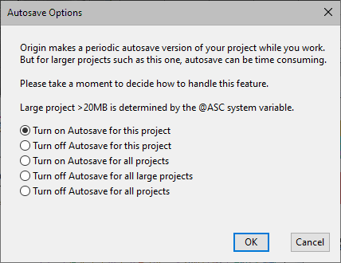

FAQ-1218 Warum funktioniert das automatische Speichern nicht?
Auto-Save-Not-Work
Letztes Update: 06.06.2025
Wir haben Berichte von Nutzern von Origin 2025 und älteren Versionen erhalten, dass das automatische Speichern nicht funktioniert hat, auch wenn Projekt automatisch alle x Minute(n) speichern (unten gekürzt auf Automatisch speichern) im Dialog Einstellungen: Optionen aktiviert ist. Wir haben in Origin 2025b einige Verbesserungen vorgenommen und Fehler behoben, so dass das automatische Speichern besser funktionieren sollte. Bitte führen Sie ein Upgrade auf Origin 2025b durch, falls Sie Probleme mit der automatischen Speicherung haben.
Grundregeln der automatischen Speicherung:
- Sie müssen das Projekt ändern und dann x Minuten vergehen lassen, um die automatisch gespeicherte Datei im Ordner Autosave\ zu sehen.
- Die automatisch gespeicherten Dateien werden nur bewahrt, wenn Origin abstürzt oder ohne Grund geschlossen wird (Stromausfall etc.). Wenn Sie die Datei manuell gespeichert haben oder Origin auf Aufforderung erfolgreich geschlossen wird, um das Projekt zu speichern, dann ist die automatisch gespeicherte Datei weg.
- Um doppelt zu speichern, wenn x Minuten vergangen sind und Sie sich dafür entschieden haben, das Projekt nicht zu speichern, benennt Origin die zuletzt automatisch gespeicherte Datei im Ordner Autosave\ in Last-AutoSave.OPJU um. Sie wird nicht gelöscht. Auf diese Weise haben Sie die Möglichkeit, sie wiederherzustellen. Bitte beachten Sie, dass dies jedes Mal passiert, wenn es eine neuere automatisch gespeicherte Datei gibt und Sie das Projekt nicht speichern.
Unten finden Sie ausführliche Problemfälle. Die Erklärung und die Umgehung des Problem für frühere Versionen wird bereitgestellt.
Keine automatische Speicherung von Projektdateien mit OPJ-Erweiterung
Vor Origin 2025b speichert Origin nur Projektdateien mit neuem Dateiformat (Dateierweiterung OPJU) automatisch. Projektdateien mit dem alten Format OPJ werden nicht automatisch gespeichert. In Origin 2025b werden OPJ-Dateien automatisch mit der OPJU-Erweiterung gespeichert.
Workaround in Origin 2025 und älter: Nach Öffnen Ihrer OPJ-Datei speichern Sie sie zuerst als OPJU.
Keine automatische Speicherung von Projektdateien mit OPJU-Erweiterung
Dies kann folgende Ursachen haben:
-
- Die Systemvariable @ASC legt die Projektdateigröße fest, um die Erinnerung an die automatische Speicherung auszulösen. Standard ist @ASC = 20 (in Megabytes). Per Standard wird die automatische Speicherung bei kleineren Projektdateien stumm durchgeführt. Bei großen Projektdateien wird, nachdem x Minuten vergangen sind, die Aufforderung für das automatische Speichern angezeigt, damit Anwender entscheiden können, ob sie automatisch speichern möchten oder nicht, da es zeitaufwändig sein kann, große Projekte alle x Minuten zu speichern.

- Wenn Sie @ASC = 0 festlegen, wodurch die Erinnung unabhängig von der Projektgröße geöffnet werden soll, kann die automatische Speicherung fehlschlagen. Workaround vor Origin 2025b: Setzen Sie @ASC höher als 0.
- Einschalten der automatischen Speicherung für alle Projekte
Beim ersten Anzeigen der Aufforderung zur automatischen Speicherung für große Projekte, werden Dateien, die größer sind als @ASC (Standardwert 20 MB), falls die dritte Option Automatische Speicherung für alle Projekte einschalten aktiviert ist, nur einmal automatisch gespeichert. Ab jetzt funktioniert die automatische Speicherung sowohl für dieses Projekt als auch für andere große Projekte nicht mehr. Dies ist kein Problem bei kleineren Projektdateien (kleiner als < @ASC)
-
- Die @ASC prüft die Projektgröße im Speicher anstatt auf der Festplatte. Beim Speichern von Projekten auf der Festplatte wird die Datei komprimiert, z. B. 10 MB. Wenn Sie sie jedoch in Origin öffnen, kann Sie größer als 20 MB sein. Um die Projektgröße im Speicher zu prüfen, bewegen Sie die Maus über den Hauptordner im Projekt Explorer. Die Größe im Speicher wird im Tooltipp angezeigt. Zum Beispiel kann die Größe > 20 MB im Speicher sein. Wenn die automatische Speicherung für alle Projekte eingeschaltet ist, wird die automatische Speicherung des Projekts fehlschlagen.
-
- Workaround vor Origin 2025: Führen Sie im Skriptfenster "doc -cac" aus, um Automatische Speicherung für alle Projekte einschalten doppelt zu aktivieren. Falls dies geschehen ist und Sie möchten, dass die automatische Speicherung stumm durchgeführt wird, unabhängig von der Projektgröße, wählen Sie bitte Einstellungen: Systemvariablen.... Legen Sie die Systemvariable ASC höher fest als jede Ihrer Projektgrößen. 10000 bedeutet zum Beispiel 10GB (10000 MB). Jegliche Dateien <= 10 GB im Speichern werden dann automatisch stumm alle x Minuten gespeichert.
- In Origin 2025b wurde der Fehler behoben, also sollte das Wählen der dritten Option keine Probleme verursachen. Sie können auch die neue Systemvariable @ASS = 1 verwenden, um die automatische Speicherung für alle Projekte einzuschalten.
Vorschlag: Wenn es sehr lange dauert, große Projekte auf Ihrem PC zu speichern, dann legen Sie nicht fest, dass sehr häufig, z. B. jede Minute, automatisch gespeichert werden soll.
Nützliche Systemvariablen
Es gibt einige hilfreiche Systemvariablen, die das Lösen von Problemen beim automatischen Speichern mit unterstützen:
- Setzen Sie diese Variable @ASM = 1 für die Fehlerbehebung. Versuchen Sie, nicht im Unterfenster auszuwählen, und bewegen Sie die Maus über den grauen Bereich des Arbeitsbereichs. Nachrichten der automatischen Speicherung werden auf der Statusleiste (unten links) gezeigt, um Sie darüber zu informieren, ob es funktioniert hat, wie zum Beispiel:
Nächste automatische Speicherung (s): 690
Projekt automatisch gespeichert: C:\.....
Automatisches Speicherung beendet, Warten auf Änderungen
Wenn die automatische Speicherung fehlgeschlagen ist, z. B. wenn @ass = 0, öffnen Sie eine opju-Datei größer als @ASC und setzen Sie @asp = 4, um den Dialog Optionen für automatische Speicherung zu öffnen und die automatische Speicherung für große Projekte auszuschalten. Die folgende Nachricht wird im Skriptfenster eingefügt.
Projekt ist zu groß (im Speicher) für automatische Speicherung: 21 MB
- Automatische Speicherung nur für kleinere Projektdateien oder alle Projekte stumm schalten
- 0 (Standard) = Automatische Speicherung für alle Projekte kleiner als @ASC stumm schalten. Für größere Dateien Erinnerung zeigen.
- 1 = Automatische Speicherung für alle Projekte einschalten. Ähnlich wie das Aktivieren der dritten Option im Erinnerungsdialog. Entsprechend wie das Setzen der folgenden Eigenschaft in älterer Version
SYSTEM.PROJECT.NOAUTOSAVEWITHSIZE = 1 und system.project.NOASKAUTOSAVE = 1
- Die Einstellung der automatischen Speicherung des aktuellen Projekts wird gespeichert. Sie wird mit der Projektdatei gespeichert.
- 0 (Standard) = globalen Einstellungen der automatischen Speicherung folgen;
- 1 = automatische Speicherung für aktuelles Projekt unabhängig von den globalen Einstellungen ausschalten;
- 2 = automatische Speicherung von aktuellem Projekt unabhängig von der Projektgröße einschalten, aber trotzdem globale Einstellungen der automatischen Speicherung befolgen, das bedeutet, wenn die automatische Speicherung global ausgeschaltet ist, wird das aktuelle Projekt nicht automatisch gespeichert;
- 4 = Erinnerungsfeld zur automatischen Speicherung unterdrücken und die Speicherung ausschalten, wenn die Projektgröße > @ASC (MB).
Schlüsselwörter:Big Data,große Datei, automatisch speichern, autosave ungespeichert, Backup, speichern, 20 MB, nicht gespeichert, wiederherstellen